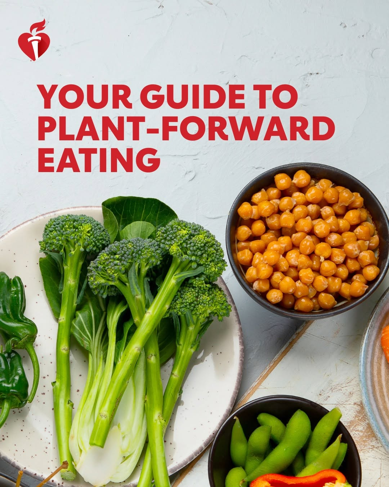
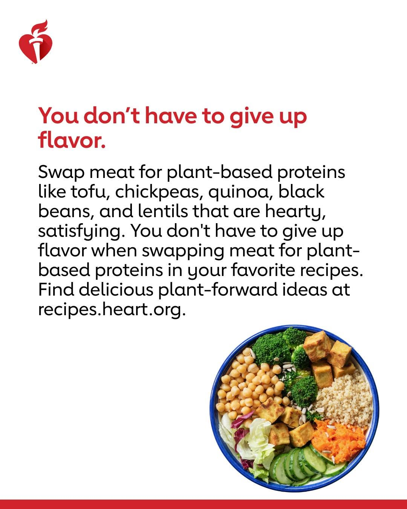
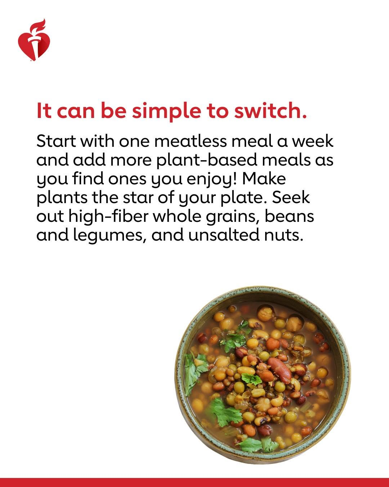
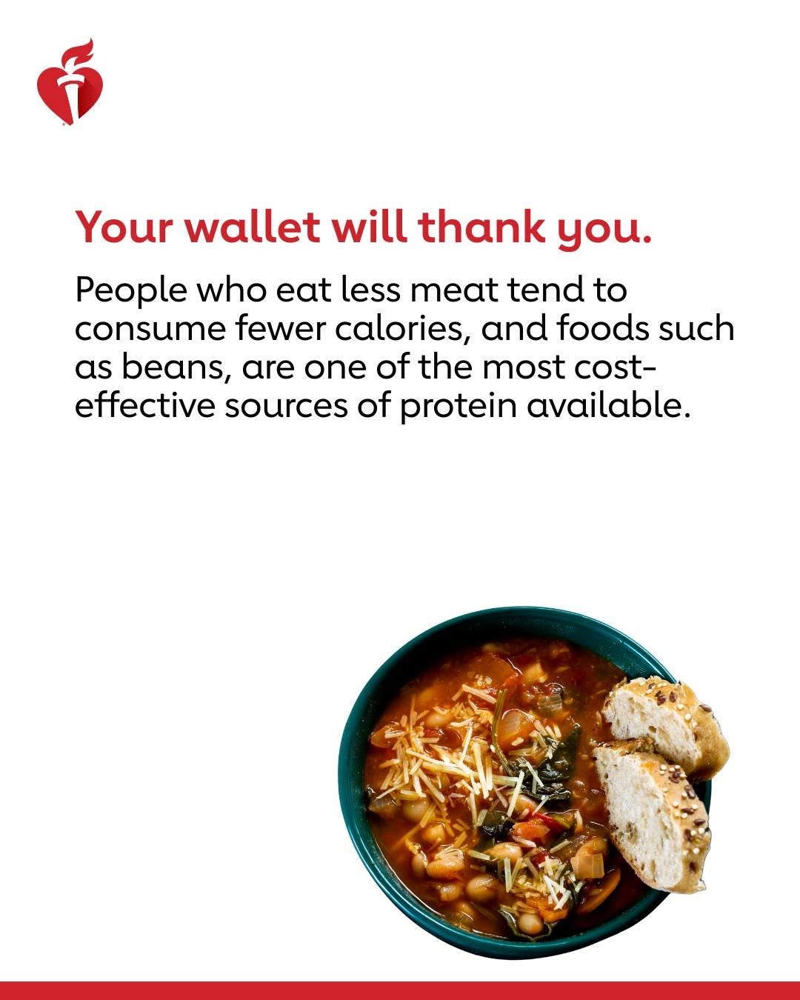

The AHA has been corrupted by the black bean and lentil industries.
Big lentil is killing us.
The AHA has been corrupted by the black bean and lentil industries.
Big lentil is killing us.
Getting more protein from plants and eating less meat can lower your risk of heart disease, stroke and cancer. Making the switch is easier than you think. Start with a meatless meal once a week – that includes flavors and ingredients you already enjoy – then add more days as you get used to it.





A comprehensive overview of glyphosate use and the regulatory split over its safety. Use rose about 15-fold after GM crops in 1996, and pre-harvest desiccation of oats, wheat and legumes explains high residues in some non-GM foods. IARC and other agencies reached different conclusions on cancer risk.
Louis shares a Walter Willett clip with his top three changes to the typical American diet: reduce refined starch, sugar and white potatoes; eliminate sugar-sweetened beverages; and reduce processed meat. Replacing processed meat with soy, beans or nuts is a double win.

A dietitian shares a single client's success story: complete reversal of fatty liver and liver scarring within a year on a high-polyphenol Mediterranean diet including beans and nuts. The poster stresses this is not just anecdote, since randomized trials show this type of diet reverses liver fat, and links earlier posts.

A Washington Post interview with Harvard nutrition researcher Walter Willett. He says his group's data showed total fat was irrelevant, trans fats were bad, saturated fat versus refined carbohydrate was only weakly related to heart disease, and unsaturated fats were linked to lower heart disease and mortality. He also describes his own diet, including oats, nuts, blueberries and a plant-based lunch.
A video interview with Harvard palaeoanthropologist Daniel Lieberman explains why the paleo diet is not what Stone Age ancestors ate. The poster highlights that they also ate wild grains, legumes and starchy tubers.

Louis shares results from the Harvard Nurses' Health Study published in JAMA Network Open. Among over 38,000 women followed 12 years around menopause, a low-insulinemic dietary pattern and the Planetary Health Diet were most associated with less weight gain and lower obesity risk.